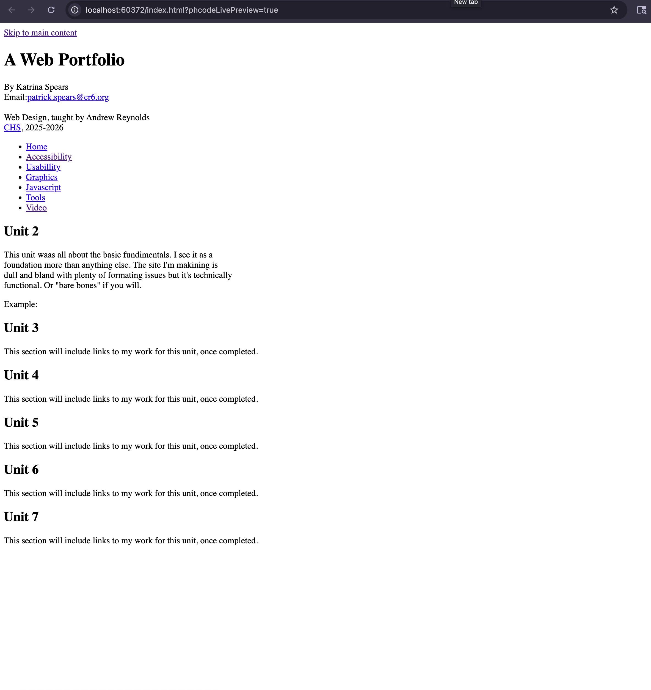

A Web Portfolio
By Katrina Spears
Email:patrick.spears@cr6.org
Email:patrick.spears@cr6.org
Web Design, taught by Andrew Reynolds
CHS, 2025-2026
CHS, 2025-2026
Unit 2
This unit waas all about the basic fundimentals. I see it as a
foundation more than anything else. The site I'm makining is
dull and bland with plenty of formating issues but it's technically
functional. Or "bare bones" if you will.
Example:

Things I've learned:
- How to make a html file
- How to link internal and external sites
- How to make ordered and unordered list
- How to add videos and captions
- And other very basic things that provide a ground to work on
Unit 3
In this unit we learned to style our websites with css I was working on a project for the majority of this unit.
Unit 4
I was mostly not present but this was the webimages unit. Here's some images:


Unit 5
This section will include links to my work for this unit, once completed.
Unit 6
This section will include links to my work for this unit, once completed.
Unit 7
This section will include links to my work for this unit, once completed.